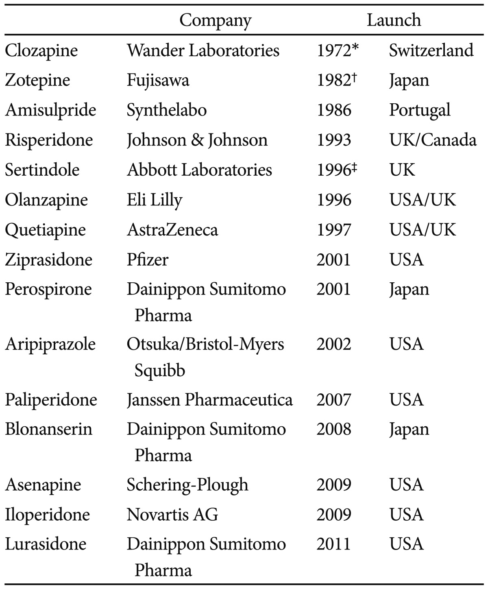

26 2세대 항정신병 약물
2nd generation antipsychotics
26.1 클로자핀
26.1.1 클로자핀의 합성
클로르프로마진과 할로페리돌로 대표되는 과거의 항정신병 약물은 조현병 치료의 스타트를 끊은 셈이지만, 이후 나온 약물들은 기존 약물의 복제품일 뿐 신약 개발은 1970년대에 들어 난항에 빠져 있었다. 역가(potency)를 올리면 진정작용이나 심혈관계 부담을 줄여주었지만, 추체외로 증후군의 빈도가 높아져 사용하기 어려웠다. 이 때문에 할로페리돌보다도 고역가인 spiroperidol이나 beneperidol은 거의 사용되지 않았다. 반대로 도파민 수용체 2형(D2)에 친화성이 약한 화합물은 항정신병 효과가 약할 뿐더러, 진정 작용, 항콜린 효과 등 다른 부작용이 상당하여 여전히 사용이 까다로왔다. 이처럼 두가지 상반되는 성질이 양립하는 가운데, 클로자핀 만이 유독 기존의 패러다임으로 설명되지 않는 신약이었다.
클로르프로마진의 성공에 고무되어 다양한 제약회사들이 새로운 항정신병 약물을 찾고 있던 중, 1958년 스위스의 제약회사 Wander 사에서는 항우울제인 이미프라민을 기초로 클로자핀을 합성해낸다. 클로자핀은 클로르프로마진과 유사하게 통증에 대한 역치를 올리는 효과가 있었다. 그러나 기존의 항정신병 약물과는 달리 강경증(catalepsy)를 일으키지 않았다. 당시만 해도 강경증, 즉 인간으로 따지면 추체외로 부작용에 해당되는 운동 저하는 항정신병 약물을 선별하는 주요 동물 모델이었기 때문에, 클로자핀은 시작부터 큰 주목을 받지 못하였다.
26.1.2 초기의 실패와 무과립구증
엎친데 덮친 격으로 1962년에 행해진 첫번째 인체 대상 시험에서도 뾰족한 성과를 보이지 못했다. 1960년대 유럽에서 진행된 임상 시험에서 그럭저럭 효과가 있다고 여겨지기 시작했으나, 대부분 독일어 문헌이라 영어권 국가에는 소개되지 않았다. 1970년대에 들어서 Hippius1는 당시의 통념인 신경이완제 역치 이론에 정면으로 도전하여, 항정신병 효과가 추체외로 증후군에 의존하지 않는다고 역설하였다.[1] 그럼에도 불구하고 대부분의 영향력 있는 정신과 의사들은 신경계 부작용을 일으키지 않는 이상, 의미있는 항정신병 효과를 얻을 수 없으리라고 믿었기 때문이었다. 아마도 1972년 Wander 사를 인수하였던 유럽 최대의 제약회사 Sandoz의 자금력과 연줄이 아니었던들, 클로자핀은 결코 빛을 볼 수 없었을 것이다. Sandoz가 우격다짐으로 Leponex®라는 상품명으로 시장에 출시했을 때에도 반응은 미적지근할 뿐이었다.
1 Hans Hippius (1925~2021): 독일의 정신과 의사. 정치적 이유로 학계에서도 위상이 추락한 독일 정신의학을 다시 부흥시키는데 앞장섰다. 유럽 중심의 국제학회인 International College of Neuropsychopharmacology (CINP)와 European Psychiatric Association (EPA)의 창립멤버이기도 하다.
고정관념에 젖어있던 유럽의 정신과 의사들과는 달리, 미국의 의사들은 클로자핀에 깊은 흥미를 나타내었고, 식품의약품청(FDA)의 허가를 위한 임상 시험을 활발히 진행하고 있었다. 그러던 중 1975년 핀란드에서 클로자핀 복용 중 예기치 못한 무과립구증으로 9명이 사망한 사례가 보고되었다. 이는 커다란 충격으로 다가왔고, 미국에서의 임상 시험이 중단되었음은 물론 유럽에서도 판매 중단 및 회수가 이루어졌다.
26.1.3 미국에서의 임상 시험
이러한 불상사에도 불구하고, 허가 받지 않은 실험적 약물에 대한 동정적 사용 제도2를 통해 클로자핀의 사용량은 꾸준히 증가하였다. 이는 무과립구증을 조기에 발견할 수 있다면 충분히 관리가능하다는 사실과 함께 난치성 환자에 대한 클로자핀의 탁월한 임상 성과 덕분이었다. 1976년 클로자피에 대한 모든 개발 및 연구를 중단시켰던 Sandoz 제약은 1982년 다시 부활시켰고, 미국 식품의약청이 요구하는 까다로운 기준을 맞추는 대규모 임상연구를 시도하였다. 바야흐로 1986년 미국 전역에서 동시에 시행된 이 연구는, Sandoz 사의 연구원인 Gilbert Honigfeld가 디자인했고, 정신의학 임상연구에 큰 족적을 남긴 John Kane과 Herbert Meltzer가 지휘하였다.
2 동정적 사용(compassionate use or expanded access): 생명이 위험하거나 다른 치료법이 전혀 없는 환자에 국한하여, 예외적으로 허가받지 않았거나 현재 연구중인 약물을 사용할 수 있도록 허용하는 제도. 환자에게 약가를 부담시키지 않는다.
클로르프로마진과의 이중 맹검 비교로 이루어진 이 연구에서 클로자핀은 압도적으로 우월한 효과를 보였고, 이에 힙입어 1989년에 미국 식품의약품청의 허가를 획득하였다. 개발된지 4년만에 허가를 획득한 클로르프로마진에 비해 클로자핀은 개발된지 어언 30년이 지나서야 판매허가를 받았다는 것은, 그만큼 의약품 안전성에 대한 시대의 요구가 까다로워 졌다는 것을 엿볼 수 있다. 그럼에도 불구하고, 논란의 와중에서 귀중한 십여년의 시간을 흘려버렸다는 것은 여전히 안따까운 일이 아닐 수 없다.
클로자핀의 등장으로 말미암아 조현병 치료에 신경부작용이 필연적이지 않다는 것이 분명해졌다. 클로자핀 효과의 근원은 여전히 베일 속에 감춰져 있었으나, 그 특성을 또 다른 약물 개발로 이행시키려는 노력은 두 가지 방향으로 진행되었는데, 하나는 흑질-선조체 도파민 수용체에는 결합력이 약하면서 중뇌-변연계의 도파민 경로에 작용이 강한 약물의 개발이었고, 또 하나는 세로토닌 수용체 차단을 통해 추체외로 증후군의 발생을 억제하는 약물이었다. 유사한 성질을 가진 약물로 설피라이드와 치오리다진이 주목받았고, 서서히 비정형 항정신병 약물이라는 약리학적 개념이 탄생하기 시작하였다.
26.2 비정형 항정신병 약물과 세로토닌 가설
26.2.1 비정형성
비정형(atypical)이란 표현은, 클로르프로마진과 할로페리돌의 Me-too drug에 지나지 않던 기존 약물들과는 전혀 다른 특성을 보이는 클로자핀을 묘사하기 위해 도입되었다. 무엇보다 추체외로 증후군을 일으킬 위험이 현저히 낮다는 특성과 함께, 음성증상에도 어느 정도의 효과를 나타낸다는 성질이 추가되었다.[2] 이러한 차이점을 부각시키기 위해 정형/비정형이라는 표현 외에도 1세대/2세대 또는 새로운 항정신병 약물이라는 표현도 사용되었다. 비교적 순수한 도파민 수용체 차단제인 할로페리돌과는 달리, 클로자핀을 비롯한 새로운 약물들은 다양한 수용체 결합 특성을 보이고 있었으며, 이중 어떤 것이 비정형성의 핵심인지를 추적하는 것이 당시 정신약물학의 선결 과제였다.
할로페리돌의 후속 약물을 개발하던 얀센 사는 1980년대 초 리탄세린(ritanserin, R55667)을 합성하였다. 이 약물은 순수한 세로토닌 수용체(5-HT2) 차단제이자 LSD 길항제였는데, 특이하게도 할로페리돌에 의한 추체외로 증후군을 경감시키는 효과를 보였다.[3] 비록 이어지는 임상시험에서 항정신병 약물로서의 효과는 미미한 것으로 나타났지만, 이후 세로토닌-도파민 길항제의 대명사가 된 리스페리돈 개발의 초석이 되었다.
26.2.2 세로토닌과 리스페리돈
애초에 조현병의 병태생리와 관련해서 세로토닌이 거론되기 시작한 것은 1950년대로 거슬러 올라간다. 세로토닌 수용체에 결합하여 환각을 일으키는 LSD 모델은 초창기 조현병 모델 중 하나였으나, 급성 정신병적 반응과 조현병은 질적으로 다르다는 점에서 세로토닌 모델은 그다지 각광받지 못하였다. 그러던 중 1985년에 리스페리돈이 개발되면서 세로토닌은 조현병 이해의 핵심요소로 자리잡게 되었다. 리스페리돈은 비슷한 시기에 개발된 다양한 세로토닌 수용체 길항제 중에서도 유달리 LSD의 정신병 유발 효과를 차단하는 성질을 보였으며, 이 때문에 항정신병 약물로서의 가능성이 일찍부터 주목받았다.[4] 리스페리돈은 1993년 미국 식품의약청의 허가를 받은 이후 무난한 효과와 안전성으로 현재까지도 가장 광범위하게 사용되는 항정신병 약물의 하나가 되었다. 더군다나 리스페리돈은 과거의 약물과는 달리 음성증상에도 어느 정도 효과를 보인다는 점에서 새로운 가능성을 열었다.
리스페리돈이 정형 약물과 차이가 나는 성질, 동시에 클로자핀가 공유하고 있는 성질은 다양한 세로토닌 수용체를 차단한다는 것이었다. 이를 근거로 Herbert Meltzer는 세로토닌 및 도파민 수용체 차단의 적절한 비율이 두 약물의 독특한 효과의 원천이라 주장하였다.(15.1.1 장) Meltzer는 5-HT2/D2의 이상적인 비율이 25 정도라고 주장하였다.3[5] 한 동안은 순수한 세로토닌 길항 효과만으로도 항정신병 효과를 나타낼 수 있지 않을까하는 기대에 맞추어 다양한 약물이 시험되기도 하였지만, 가시적인 성과를 얻지는 못하였다. 이어지는 기초 연구와 임상 경험은 여전히 도파민 차단 효과가 항정신병 효과의 필수불가결한 요소임을 시사하였고, 이후의 이론적 발전은 세로토닌과 도파민 시스템의 상호 조절 관계에 초점이 맞추어졌다.
3 5-HT2/D2 ratio: 이 비율은 도파민 차단 효과에 대한 세로토닌 수용체 차단 효과의 비율을 말하며, 리스페리돈은 이 비율이 19 정도이며 클로르프로마진은 7 정도이다.
26.2.3 세로토닌 가설
일반적으로 dorsal raphe로부터 뻗어나온 세로토닌 유리 신경세포는 도파민 신경세포의 발화를 억제한다. 따라서 5-HT2 길항제를 사용하면 오히려 도파민 활성이 증가되며, 기존 이론에 따르면 도파민 활성 증가는 정신병적 증상의 악화로 이어져야만 한다. 학자들은 이러한 모순을 해결하기 위해 기저핵으로 뻗어나가는 nigrostriatal pathway와 변연계 및 대뇌피질로 뻗어나가는 mesolimbic, mesocortical pathway를 구분하기 시작하였다. 세로토닌 차단은 nigrostriatal pathway 및 mesocortical pathway에서의 도파민 활성을 높여, 추체외로 증후군을 억제할 뿐 아니라, 무의욕, 무감동으로 특징지워지는 조현병의 음성증상에 효과를 나타낼 것이었다. 물론 mesolimbic pathway의 도파민 활성을 높여 증상을 악화시킬지 모른다고 우려할 수 있으나, 적당한 도파민 수용체 차단 효과 때문에 그런 일은 발생하지 않는다. 즉 부위에 따라 도파민 활성을 조절함으로써 일거양득의 효과를 누릴 수 있다. 이러한 이론은 세로토닌 가설 혹은 세로토닌-도파민 가설이라는 이름하에 조현병 치료의 핵심 이론 중 하나로 자리잡게 되었다.[6]
이후 정신병적 증상 뿐 아니라, 조현병의 인지기능 감소에 대한 관심이 점점 고조되면서, 특히 전전두엽의 도파민 활성감소는 조현병을 이해하는 새로운 패러다임으로 인식되었다. 세로토닌-도파민 길항제들은 5-HT2A 뿐 아니라 5-HT1A 자가수용체를 차단함으로써 도파민 활성이 낮은 전전두엽에서 도파민 분비를 자극하며, 이 또한 비정형 항정신병 약물의 인지 증상 호전 효과의 토대로 여겨졌다.
26.3 리스페리돈 이후의 항정신병 약물
26.3.1 2세대 항정신병 약물
분명히 세로토닌 가설은 클로자핀과 그 비정형성을 설명하는데 있어서 가장 먼저 제시되었고, 가장 큰 영향력을 행사한 가설이긴 하지만, 그것만 갖고는 비정형성을 모두 설명하는데 무리가 있다. 클로자핀은 세로토닌 외에도 수십 종류의 다양한 수용체에 결합하며, 이외에도 세포 내 신호전달 체계에 미치는 광범위한 영향은 세포막 수용체 만으로 설명하기 어렵다. 클로자핀과 리스페리돈을 뒤이어 개발된 항정신병 약물로는 올란자핀, 퀘티아핀, 아미설프라이드, 서틴돌, 지프라시돈 등이 있는데, 이들은 모두 광범위한 수용체에 결합한다는 특징을 공유한다. 그렇게 본다면 이들 약물은 항콜린 효과가 비교적 적다는 것 말고는 고전적인 클로르프로마진 과의 차이가 확연하지 않다.
올란자핀은 그 구조나 수용체 차단 프로파일에 있어서 클로자핀과 가장 흡사하지만, 그 효과는 클로자핀에 미치지 못한다. 체중 증가 및 대사성 증후군의 위험을 클로자핀과 공유하고 있지만, 혈액학적 부작용이 위험은 현저히 낮다. 퀘티아핀 역시 세로토닌과 도파민 수용체 뿐 아니라, 노르에피네프린, 히스타민 수용체 등 다양한 수용체에 결합한다. 세로토닌 가설에 부합할 뿐 아니라, 도파민 수용체 결합 후 신속히 해리되는 등 다른 비정형 항정신병 약물들과 많은 성질을 공유한다. 그러나 이 약물은 조현병에 대한 효과보다는 양극성 장애, 단극성 우울증 등 정동 장애에 더 활발히 사용되고 있다. 클로자핀, 올란자핀과 함께 대사성 증후군의 위험을 공유하는데 덧붙여 QTc 간격을 연장시켜 염전성 심실 빈맥(torsade de pointes)를 일으키는 독특한 부작용을 나타낸다.
종합해보면 비정형 약물이라고 하더라도 하나의 범주로 묶긴 어려우며, 각각의 약물 나름대로 독특한 특성과 부작용을 갖고 있다. 이렇게 보면 추체외로 증후군의 위험이 적다는 것 외에는 정형 약물과도 뚜렷이 구분되지 않는다고 할 수 있다. 더군다나 효과 면에서도 정형 약물에 비해 탁월하다는 평가를 내리기엔 부족한 면이 많기 때문에, 진정한 비정형 약물로는 클로자핀만을 꼽을 수 있을런지 모른다.
26.3.2 도파민 부분 효현제와 3세대 항정신병 약물
정형 항정신병 약물 개발의 토대가 된 도파민 가설에 따르면 중뇌-변연계 (mesolimbic) 도파민 경로의 과활성은 조현병이 양성증상을 일으키는 것으로 되어있다. 그러나 실제로 동물실험에서 도파민이나 도파민 효현제를 투여하면, 용량에 따라 이중적인(biphasic) 반응을 일으킨다. 즉 낮은 용량에서는 오히려 과흥분이 억제되다가 높은 용량에서는 자극받기 시작한다. 이를 설명하기 위해 진행된 연구 끝에 알게 된 것은 도파민 분비를 억제하는 D2 자가수용체의 존재였다.[[7] 도파민 자가수용체는 오히려 시냅스 후 수용체보다 도파민에 대한 결합력이 크며, 이 때문에 도파민 효현제의 농도가 낮을 때에는 도파민 활성을 차단한다. 이를 근거로 도파민 수용체에 대한 부분효현제를 이용하여 과도한 도파민 활성을 조절하려는 구상이 제시되었다.[8] 도파민 차단제와 낮은 용량의 효현제를 함께 사용하는 방식도 모색되었으나, 더욱 효율적인 것은 부분효현제를 쓰는 것이다. (–)-3-PPP 혹은 preclamol이라는 약물은 가장 최초로 시도된 부분효현제이다. 안타깝게도 임상 성과는 실망스러웠지만, 시냅스 전 자가수용체와 시냅스 후 수용체에 대한 결합력을 어떤 비율로 맞추어 나가야 하는 지에 대한 고집스러운 연구 끝에 아리피프라졸(aripiprazole)이 탄생하게 되었다.
아리피프라졸은 1989년 일본 오츠카 제약의 연구원이었던 Yasuo Oshiro 등에 의해 합성되었다. 오츠카 제약은 이미 1970년 대부터 D2 시냅스 전 자가수용체 효현제 합성을 연구하였고, 일찌기 아리피프라졸 합성에 성공했으나, 미국 식품안정청의 승인을 받은 것은 2002년이 되어서 였다. 처음 약물이 등장하였을 때 슬로건은 도파민 시스템 안정제(dopamine system stabilizer)였다.[9] 그도 그럴 것이 아리피프라졸은 도파민 수용체에 대한 결합력은 매우 강한 반면, 그 효현 효과는 원래 도파민에 비해 매우 낮다. 따라서 시냅스 전 수용체를 선점함으로써 도파민에 의한 음성 피드백을 억제하여 도파민 분비를 증가시키는 한편, 주위 도파민 농도에 따라 시냅스 후 수용체의 활성을 약물이 없었을 때보다 올리기도 하고 내리기도 한다. 이러한 이중성(biphasic property)은 조현병의 음성증상 및 인지증상에 대한 관심이 점점 고조되던 시기와 맞아떨어지면서, 아리피프라졸이 조현병 치료제에 있어서 확고한 위치를 차지할 수 있도록 일조하였다. 혹자는 아리피프라졸의 독특한 효과를 강조하여 이를 3세대 항정신병 약물로 분류하기도 한다. 유사한 약리작용으로 함께 3세대 약물로 분류되는 것으로는 brexipiprazole과 cariprazine 등이 있다.[8]
아리피프라졸의 등장은 기존 비정형 약물의 작용기전에 대해서도 새롭게 해석하는 계기를 가져왔다. 2000년대 초 Kapur를 위시로 한 일군의 학자들은 클로자핀을 비롯한 기존의 비정형 항정신병 약물이 낮은 추체외로 증후군 위험성을 지니는 것은, 도파민 수용체를 차단하기는 하지만 동시에 신속하게 해리되어 버리기 때문이라고 주장하였다.(?sec-fast-dissocaition 장)[10] 초기의 강한 도파민 수용체 차단과 신속한 해리, 이러한 과정이 투약을 할 때마다 반복되면서 비정형적인 치료효과가 나타나고, 이 성질이 5-HT2A 차단보다 더 비정형성과 연관되었으리라는 주장이다. 비록 이 이론은 최근에는 시들해졌지만 한때는 유력한 가설로 자리잡았었다.
기존 항정신병 약물의 작용기전을 이해하고, 비정형성을 규명하려는 노력은 여기서 그치지 않는다. 원래 약물의 효과는 수용체 친화도(receptor affinity)와 내재한 효현효과(intrinsic efficacy or activity)로 규정된다. 수용체 친화도를 통해 내인성 리간드와의 경쟁적 결합에서의 우위성이 결정되며, 내재적 활성을 통해 최대 결합시의 약리효과가 정해진다. 고전 약리학에서 이러한 성질은 약물의 내재적 성질이며, 작용하는 조직이나 세포가 다르다고 해서 달라지진 않는다. 이에 비해 아리피프라졸의 도파민 효현효과는 세포주에 따라 달라지는 양상을 보인다. 똑같이 도파민 수용체에 달라붙더라도, 도파민 신호전달체계 중에서 특정 부분에만 효과를 보이고, 다른 부분에는 영향을 끼치지 않기도 하며, 이러한 차별성이 세포가 처해있는 상황에 따라 달라지기도 한다.[11] 이러한 성질을 기능적 선택성(functional selectivity)라고 하는데, 2000년대 이후 기존 약물의 성질을 이해하거나 새로운 약물을 설계하는 데 있어 가장 앞서가는 패러다임의 하나로 자리잡고 있다.[12]

26.4 참신한(novel) 항정신병 약물들
현재 한국에서 가장 광범위하게 사용되고 있는 항정신병 약물은 2세대 비정형 약물로서 클로자핀을 비롯하여 리스페리돈, 올란자핀, 퀘티아핀, 아미설프라이드, 지프라시돈, 아리피프라졸 그리고 리스페리돈의 개량형인 팔리페리돈 등이다. 미국과 유럽 등지에서는 이외에도 iloperidone, asenapine, lurasidone, cariprazine, brexpiprazole, lumateperone 등이 식품안정청의 허가를 획득하여 사용되고 있다. 문헌에서는 이들을 새로운(newer) 항정신병 약물과 구분하여 참신한(novel) 항정신병 약물로 지칭하기도 한다. 과거 항정신병 약물 개발의 역사를 보면, 2세대 약물이라고 해도 대부분 1970~80년대에 합성되었고, 20년 가까운 불확신과 우려의 나날을 거친 끝에 임상에 사용하게 된 약물들이다. 이에 비해 이후 합성된 약물은 대부분 합성되고 얼마 지나지 않아 사장되었으며, 기존 약물에 비해 별반 우수성을 갖지 못한다는 이유로 개발이 중단되었다. 실패를 거듭한 제약회사들은 항정신병 약물에 대한 투자를 꺼리게 되었고, 신약 개발의 파이프라인은 점점 막혀만 갔다.
때문에 참신한 약물이라고 소개되고 있는 약물들은 대체로 중소 제약업체에 의해 개발되었고, 과거 비정형 약물들을 개발, 배급했던 거대 제약사처럼 전세계적인 판로를 개척하지 못하고 있다. 이러한 연유에서인지 이들 약물 중 어느 것도 한국 시장에는 아직 소개되지 못하고 있다. 게다가 참신하다고 해도, 기존 약물과 차별화되는 새로운 작용기전을 갖는 약물이 아니기 때문에, 소위 “Me-too” 약물이라는 딱지를 쉽사리 떼지 못하고 있다.
참신한 약물들, 그중에서도 특히 가장 최근 임상에 도입된 cariprazine, brexpiprazole, lumateperone 은 모두 부분효현제 특성을 지니고 있는 아리피프라졸 계열의 약물이다.[14] 또 다른 공통점이라면 다양한 수용체에 결합하는 multi-target 약물이라는 점이다. 그 동안 도파민 D1, D3를 비롯하여, 세로토닌 수용체의 각 아형들, glutamate system, neuropeptide Y등 다양한 신경전달물질 시스템이 항정신병 약물의 타겟으로 고려되어 왔으나, 분명한 것은 어느 한 시스템에 선택적으로 작용하는 약물로는 가시적인 성과를 볼 수 없었다는 점이다. 이를 의식한 듯, 새로 나오는 약물은 대부분 다양한 수용체를 공략하며, 이들간의 밸런스를 중요시한다.
조현병 자체를 치료할 수 있는 참신한 항정신병 약물의 개발이 힘들다면, 특정 증상만을 타겟으로 하여 호전을 꾀하는 치료제를 개발할 수 있을 것이다. 특히 치료가 어려운 음성 증상 및 인지 증상이라면, 이러한 신약 개발 노력은 큰 의미를 가질 것이다. Cariprazine은 D2,3 수용체의 부분효현제이며, 아리피프라졸과 달리 D3에 대한 친화도가 더 크기 때문에 초기부터 음성 증상에 우수한 효과를 보일 것이라 기대되었다. 뚜렷한 음성 증상을 보이는 만성 조현병 환자를 대상으로 시행된 다기관 공동연구에서 cariprazine은 리스페리돈에 비해 우월한 음성 증상 개선 효과를 보였다.[15] 만약 cariprazine 효능에 대한 확신이 점점 확고해진다면, 음성 증상에 D3 수용체가 차지하는 위치에 대한 연구도 부쩍 늘어날 것으로 기대된다.
또 다른 타겟은 조현병의 인지 증상이다. 인지 증상은 조현병 환자의 삶의 질을 떨어뜨리는 주된 요소일 뿐 아니라, 양성 및 음성 증상의 근간을 이루는 근본 증상으로 여겨지기도 한다. 오래전부터 조현병 환자에게 항치매제를 사용하여 인지 증상의 개선을 꾀하려는 노력이 있었으나, 별다른 성과를 거두지 못하였다. 이외에도 D-cycloserine, sarcosine 등 glycine 활성을 통해 NMDA 수용체 기능을 조절하는 약물, 니코틴성 아세틸콜린 수용체 활성을 조절하는 varenicline, encenicline 같은 약물, 전반적인 염증 상태를 억제하는 NSAID 계통 항염증제, erythropoietin, minocycline 등이 연구되었다.[16,17]
이러한 신약개발 연구동향에서 엿보이는 것은, 이미 다른 목적으로 사용되고 있는 약물을 새롭게 항정신병 약물로서 용도 변경(repurposing)하는 전략이다.[17] 항정신병 약물의 경우와도 같이 의학에서 사용되는 대부분의 약물은 그 효과를 완전히 이해하지 못하고 있다. 따라서 기존 약물의 새로운 용도를 발견해내는 작업은 신약 개발에서 좀처럼 성공을 거두지 못하는 제약사로서는 잠재력이 풍부한 블루 오션이라 할 수 있다. 주된 기법으로는 조현병의 병태생리와 관련된다고 여겨지는 단백질 인터랙톰(protein interactome)을 정의하고, 이와 작용하는 영역이 최대한 겹치는 약물을 후보 물질로 선정하는 것이다. 또 다른 방법은 기존의 항정신병 약물이 그 발현 정도에 영향을 끼친다고 알려진 단백질들에 역시 가장 많은 영향을 미치는 약물을 찾는 것이다. 생물정보학 및 컴퓨터 공학의 발전과 더불어 요새는 약물과 유전자, 단백질 들의 상호관계가 데이터베이스로 정리되어 있어 손쉽게 접속이 가능한 시대이므로, 이러한 검색작업은 과거와는 비교가 안 될 효율성으로 진행된다. 이렇게 선정된 물질에 대한 임상 시험도 속속 진행되고 있다.[18]
26.5 새로운 개념의 항정신병 약물 개발은 가능한가?
1960년대 Carlsson과 Lindqvist의 연구팀이 도파민 가설을 내놓을 수 있었던 것은, 당시만 해도 경이로운 효과를 보였던 클로르프로마진이 도파민 수용체를 차단한다는 사실을 발견하였기 때문이었다. 이를 통해 조현병 환자들은 도파민 활성이 과다하게 상승되어 있고, 약물을 통해 이를 정상화시킬 수 있다는 단순한 논리가 세워졌고, 이후 개발된 항정신병 약물들은 모두 이 단순한 이론에 근거하고 있다. 물론 중뇌-변연계 도파민 활성이 조현병의 양성 증상과 밀접한 관련이 있음은 의심의 여지가 없다. 그러나 망상과 환각은 조현병에만 독특한 증상도 아니요, 환자의 삶의 질에 결정적인 영향을 끼치는 것도 아님을 명심해야 한다. 망상과 환각은 그야말로 표면적으로 드러나는 극적인 증상일 뿐이며, 더 깊숙한 곳에 자리하여 망상, 환각을 야기하는 근본 증상은 오히려 인지 기능의 퇴화와 뒤틀림이라고 할 수 있다. 더군다나 현재 가장 널리 받아들여지는 신경발달학적 가설에 의하면, 조현병은 양성 증상이 발현하기 훨씬 전부터 이미 영향을 끼치고 있으며, 뇌내 신경세포들간의 연결 네트워크의 이상, 비정상적인 신경세포의 가지치기(neuronal pruning) 등이 일어나고 있다는 증거가 있다. [19,20] 이렇듯 겉으로 나타나는 조현병의 증상 기저에는 다양한 신경생물학적 변이들이 자리잡고 있기 때문에, 도파민과 직접 관련되지 않은 시스템 역시 새로운 치료제 개발의 타겟이 될 수 있을 것으로 기대된다.
26.5.1 세로토닌 수용체 아형들
도파민 가설 이후, 처음 등장한 대안 가설은 세로토닌-도파민 가설이었다. 비정형 항정신병 약물이 공통적으로 세로토닌 수용체를 차단한다는데서 출발한 이 가설은 처음에는 5-HT2A 수용체에 국한하여, 추체외로 증상을 경감시킨다는 보조적인 측면에서만 논의되는 경향이 있었으나, 최근에는 5-HT3, 5-HT6에 대한 관심이 높아짐과 동시에 인지기능 향상을 위한 치료제 개발에 관심이 모아지고 있다.[21] 유발전위의 이상이나 감각 관문(sensory gating)의 이상 등 조현병 환자의 독특한 신경인지적 결함이 속속 발견되면서, 이러한 변이들이 니코틴성 아세틸콜린 수용체와 관련됨이 발견되었다. 전술했듯이 varenicline, encenicline 등의 약물은 이러한 인지적 이상을 회복시키려는 목적으로 시도되고 있다. 그러나 뭐니뭐니 해도 이전부터 가장 연구의 초점이 되고 있는 것은 글루타메이트시스템이다.
26.5.2 글루타메이트 시스템
중추신경계 신경세포 중 60% 이상은 글루타메이트를 분비하며, 거의 모든 신경세포는 글루타메이트 수용체를 지니고 있다. 글루타메이트는 학습, 기억 및 신경가소성에 있어서 가장 핵심이 되는 신경전달물질이며, 발생단계의 뇌 세포가 서로 연결을 이루고 일정한 구조를 형성하는데 기여한다. 글루타메이트 활성의 과다나 부족은 도파민 GABA 등과의 상호작용을 통해 다양한 정신 증상을 일으킨다. 일례로 PCP, ketamine과 같은 NMDA 수용체 차단제는 급격한 정신병적 증상을 나타내며, 장기간 투여는 음성 증상, 인지 증상을 일으키는 것으로 알려져 있다. 이 밖에도 조현병 환자의 사후 뇌조직에서 NMDA 수용체를 측정한 결과, 수용체 자체 뿐 아니라 glycine, D-serine, polyamine 결합 부위의 이상이 발견되기도 하였다.[22]
연구자들은 먼저 D-cycloserine과 glycine에 대하여 항정신병 약물로서의 가능성을 타진해보았다. 그러나 기대와는 달리 2007년 발표된 조현병의 인지 및 음성 증상 임상 시험(the Cognitive and Negative Symptoms in Schizophrenia Trial, CONSIST) 결과에서는 위약에 비해 별다른 효과를 보이지 못하는 것으로 드러났다.[23] 이후 NMDA 수용체에 결합하는 위 약물들과는 달리 metabotrophic glutamate receptor의 선택적 효현제인 LY2140023 개발이 이루어졌다. 제약사인 Eli Lilly의 주도하에 3상 임상시험까지 이어졌으나 결과적으로는 미적지근한 효과로 개발이 중단되었다.[24] 이 밖에도 세포외 글루타메이트 농도를 조절하는 N-acetylcysteine, 글루타메이트 신호전달계의 하위 단계에 관여하는 phosphodiesterase의 억제제들, Glycine transporter 1을 억제하는 bitopertin 등이 임상시험을 거치고 있다. 그러나 현재까지 이렇다할 효과를 보인 약물은 없었다.[25]
26.5.3 첨단 의학의 모험적 시도와 조현병 치료의 미래
오랜 동안 수많은 연구자들의 지적 탐구 및 헌신적 노력을 통해 적지 않은 가시적인 성과를 거두었음에도 불구하고, 조현병의 근본적인 원인이나 치료법은 쉽게 붙잡히지 않는다. 그 원인에 대해 두 가지 서로 다른 방향으로 접근할 수 있다. 첫째는 조현병은 단일한 원인이 아니라 다수의 원인들이 서로 복잡하게 얽히면서 발현되는 질병일 것이라는 가정이다.[26] 근원을 거슬러올라가면 결국 단일한 원인이 있을 것이라는 순진한 기대와는 달리, 실상을 파헤치기 위해서는 시스템적 사고 방식과 복잡계를 이해하는 이론적 도구가 갖춰져야 한다는 주장이다. 반면 둘째는 조현병이라고 불리워지는 현상은 사실 표면적으로만 닮았을 뿐 서로 이질적인 질병들을 망라하고 있다는 가정이다. 개개 환자들은 서로 질병의 근원이 된 유전적 변이가 다르고, 신경생물학적 변이도 다를 것이라는 주장이다.[27]
두 노선은 거의 대등한 정도로 주장되고 있으며, 개개 학자들 역시 어느 한 노선만을 고집한다기 보다는 그때그때 상황에 따라 어느 한 견해를 지지했다가 나중에는 다른 견해를 따르기도 한다. 복잡하게 얽힌 비선형 시스템에 대한 고찰은 수십년 전부터 이루어져 왔으나, 아직도 제대로 된 이해의 틀이 마련되지 않았기 때문에 전자의 노선은 상대적으로 발전이 뒤쳐졌다. 이에 비해 후자의 노선은 설득력이 있을 뿐더러, 최근 각광받는 정밀의학(precision medicine)과 맥락을 같이 하고 있다. 후자를 주장하는 학자들은 환자 개개인마다 조현병의 원인이 된 유전적 변이가 다르기 때문에, 전체 게놈 스캔 등의 방법으로 환자의 변이를 찾아내어, 이를 줄기 세포 혹은 CRISPR-Cas9 유전자 가위 등의 첨단 기법을 동원하여 교정할 수 있으리라 기대한다.[28–30]
단순하고 명쾌한 논리는 해답에 가까워졌을 것이라는 기대감을 높이긴 하지만, 생물학적 현상이 단순할 리가 없다는 것은 부인할 수 없는 진실이다. 설령 정밀의학의 힘을 빌려 개개 환자를 세부 아형으로 분류하고, 동일한 조현병이라도 그 환자에게 가장 적절한 치료법을 선택하는 일이 가능해질 지 모른다. 그러나 이는 여전히 다양한 종류의 치료 수단이 마련되었을 때의 일이다. 아직은 기존에 사용되고 있는 약물이 과연 어떤 기전으로 치료효과를 나타내는지 조차 완전히 이해하지 못한다. 앞서 설명한 기능적 선택성(functional selectivity)처럼, 약물의 효과는 단순히 리간드-수용체 결합이라는 논리만으로 설명되지 않는다. 동일한 약물이라도 작용하는 세포가 처한 상황에 따라 효현제가 될 수도 길항제가 될 수도 있으며, 또 세포 내 신호전달계 각각에 대하여 특정 레벨에서만 선택적으로 작용할 수도 있다. 이러한 기전들을 모두 이해하려면, 전사체학(transcriptome), 후성 유전체학(epigenome), 마이크로바이옴(microbiome) 단백질체학(proteome) 그리고 대사체학(metabolome)의 지식이 총망라되어 세포내에서 어떤 현상이 일어나는지에 대한 이해의 폭이 깊어져야 할 것이다. 이러한 이해의 폭이 깊어지는 동시에 눈부시게 발전하고 있는 광유전학(optogenetics), 화학유전학(chemogenetics), 유전자 편집 기술(gene editing), 빅데이터와 정보기술, 나노기술 등이 한데 어우러 질 수 있다면, 새로운 개념의 질병 이해와 치료 기술이 등장할 날도 멀지 않을 것으로 기대된다.[31]